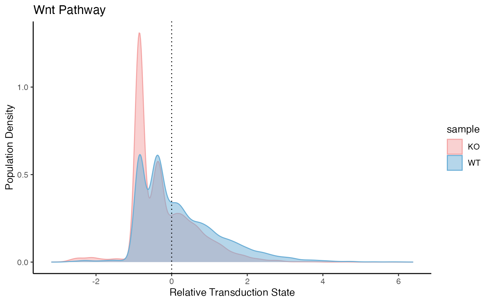

beta_catenin_ko.RmdThis vignette shows the application of PathwayEmbed in a beta-catenin perturbed system where Ctnnb1 upstream enhancer is depleted in instestinal epithelia. Refinements of coefficients is flexible and should be case-depedent. References: Hua et al. A Ctnnb1 enhancer transcriptionally regulates Wnt signaling dosage to balance homeostasis and tumorigenesis of intestinal epithelia. Elife. 2024 Sep 25;13:RP98238. doi: 10.7554/eLife.98238. PMID: 39320349; PMCID: PMC11424096.
library(PathwayEmbed)
library(Seurat)
#> Loading required package: SeuratObject
#> Loading required package: sp
#> 'SeuratObject' was built under R 4.4.1 but the current version is
#> 4.4.2; it is recomended that you reinstall 'SeuratObject' as the ABI
#> for R may have changed
#>
#> Attaching package: 'SeuratObject'
#> The following objects are masked from 'package:base':
#>
#> intersect, t
url_ko <- "https://ftp.ncbi.nlm.nih.gov/geo/series/GSE233nnn/GSE233978/suppl/GSE233978_KO_filtered_feature_bc_matrix.h5"
url_wt <- "https://ftp.ncbi.nlm.nih.gov/geo/series/GSE233nnn/GSE233978/suppl/GSE233978_WT_filtered_feature_bc_matrix.h5"
download.file(url_ko, destfile = "GSE233978_KO_filtered_feature_bc_matrix.h5", mode = "wb")
download.file(url_wt, destfile = "GSE233978_WT_filtered_feature_bc_matrix.h5", mode = "wb")
# Load KO and WT expression matrices from local HDF5 files
ko_data <- Read10X_h5("GSE233978_KO_filtered_feature_bc_matrix.h5")
wt_data <- Read10X_h5("GSE233978_WT_filtered_feature_bc_matrix.h5")
# Create Seurat objects
# Apply during object creation
ko <- CreateSeuratObject(counts = ko_data, project = "KO", min.cells = 3, min.features = 200)
wt <- CreateSeuratObject(counts = wt_data, project = "WT", min.cells = 3, min.features = 200)
# Add sample metadata
ko$sample <- "KO"
wt$sample <- "WT"
# Merge and join layers
merged <- merge(ko, wt)
#> Warning: Some cell names are duplicated across objects provided. Renaming to
#> enforce unique cell names.
merged[["RNA"]] <- JoinLayers(merged[["RNA"]])Get normalized and scaled data
# Normalize and scale
merged <- NormalizeData(
object = merged,
normalization.method = "LogNormalize",
scale.factor = 10000
)
#> Normalizing layer: counts
merged <- FindVariableFeatures(
object = merged,
selection.method = "vst",
nfeatures = 2000
)
#> Finding variable features for layer counts
merged <- ScaleData(
object = merged,
features = VariableFeatures(object = merged)
)
#> Centering and scaling data matrix
# Compute Wnt pathway score
wnt_scores <- ComputeCellData(merged, "Wnt", distance.method = "manhattan", batch.size = 1000)
#> Centering and scaling data matrix
#> Warning: Different features in new layer data than already exists for
#> scale.data
#> Warning: The `slot` argument of `GetAssayData()` is deprecated as of SeuratObject 5.0.0.
#> ℹ Please use the `layer` argument instead.
#> ℹ The deprecated feature was likely used in the PathwayEmbed package.
#> Please report the issue to the authors.
#> This warning is displayed once every 8 hours.
#> Call `lifecycle::last_lifecycle_warnings()` to see where this warning was
#> generated.
#> Centering and scaling data matrix
#> Processing batch 1
#> Computing distance...
#> Running MDS ...
#> MDS finished
#> Batch 1 processed with 1000 cells
#> Processing batch 2
#> Computing distance...
#> Running MDS ...
#> MDS finished
#> Batch 2 processed with 1000 cells
#> Processing batch 3
#> Computing distance...
#> Running MDS ...
#> MDS finished
#> Batch 3 processed with 1000 cells
#> Processing batch 4
#> Computing distance...
#> Running MDS ...
#> MDS finished
#> Batch 4 processed with 1000 cells
#> Processing batch 5
#> Computing distance...
#> Running MDS ...
#> MDS finished
#> Batch 5 processed with 1000 cells
#> Processing batch 6
#> Computing distance...
#> Running MDS ...
#> MDS finished
#> Batch 6 processed with 1000 cells
#> Processing batch 7
#> Computing distance...
#> Running MDS ...
#> MDS finished
#> Batch 7 processed with 1000 cells
#> Processing batch 8
#> Computing distance...
#> Running MDS ...
#> MDS finished
#> Batch 8 processed with 1000 cells
#> Processing batch 9
#> Computing distance...
#> Running MDS ...
#> MDS finished
#> Batch 9 processed with 1000 cells
#> Processing batch 10
#> Computing distance...
#> Running MDS ...
#> MDS finished
#> Batch 10 processed with 1000 cells
#> Processing batch 11
#> Computing distance...
#> Running MDS ...
#> MDS finished
#> Batch 11 processed with 1000 cells
#> Processing batch 12
#> Computing distance...
#> Running MDS ...
#> MDS finished
#> Batch 12 processed with 1000 cells
#> Processing batch 13
#> Computing distance...
#> Running MDS ...
#> MDS finished
#> Batch 13 processed with 1000 cells
#> Processing batch 14
#> Computing distance...
#> Running MDS ...
#> MDS finished
#> Batch 14 processed with 1000 cells
#> Processing batch 15
#> Computing distance...
#> Running MDS ...
#> MDS finished
#> Batch 15 processed with 1000 cells
#> Processing batch 16
#> Computing distance...
#> Running MDS ...
#> MDS finished
#> Batch 16 processed with 1000 cells
#> Processing batch 17
#> Computing distance...
#> Running MDS ...
#> MDS finished
#> Batch 17 processed with 1000 cells
#> Processing batch 18
#> Computing distance...
#> Running MDS ...
#> MDS finished
#> Batch 18 processed with 1000 cells
#> Processing batch 19
#> Computing distance...
#> Running MDS ...
#> MDS finished
#> Batch 19 processed with 1000 cells
#> Processing batch 20
#> Computing distance...
#> Running MDS ...
#> MDS finished
#> Batch 20 processed with 1000 cells
#> Processing batch 21
#> Computing distance...
#> Running MDS ...
#> MDS finished
#> Batch 21 processed with 1000 cells
#> Processing batch 22
#> Computing distance...
#> Running MDS ...
#> MDS finished
#> Batch 22 processed with 1000 cells
#> Processing batch 23
#> Computing distance...
#> Running MDS ...
#> MDS finished
#> Batch 23 processed with 1000 cells
#> Processing batch 24
#> Computing distance...
#> Running MDS ...
#> MDS finished
#> Batch 24 processed with 1000 cells
#> Processing batch 25
#> Computing distance...
#> Running MDS ...
#> MDS finished
#> Batch 25 processed with 1000 cells
#> Processing batch 26
#> Computing distance...
#> Running MDS ...
#> MDS finished
#> Batch 26 processed with 1000 cells
#> Processing batch 27
#> Computing distance...
#> Running MDS ...
#> MDS finished
#> Batch 27 processed with 1000 cells
#> Processing batch 28
#> Computing distance...
#> Running MDS ...
#> MDS finished
#> Batch 28 processed with 735 cells
# Prepare for plotting
plot_data <- PreparePlotData(merged, wnt_scores, group = "sample")
# Plot
PlotPathway(plot_data, pathway = "Wnt", group = "sample", c("#f4a4a4", "#6baed6"))
# Show percentage of high-scoring cells (optional)
CalculatePercentage(plot_data, "sample")
#> # A tibble: 2 × 4
#> group percentage_on percentage_off cohens_d
#> <chr> <dbl> <dbl> <dbl>
#> 1 KO 31.8 68.2 -0.447
#> 2 WT 46.9 53.1 -0.447